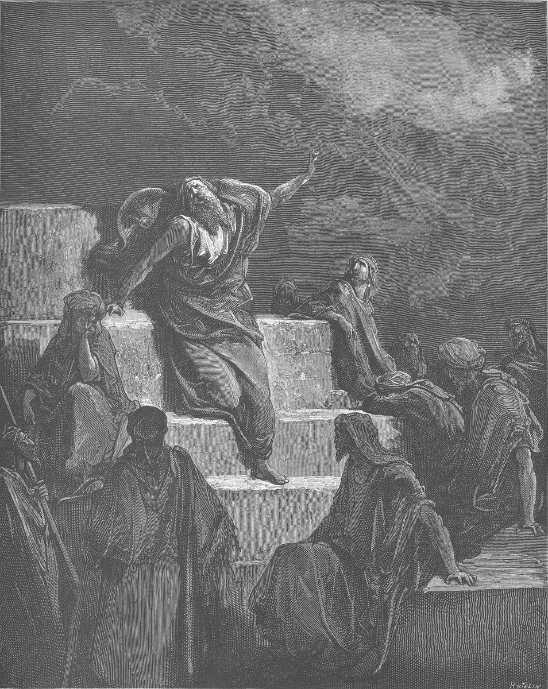

Jeremiah 23 — The Mister Translation

⚠ NOT strictly this chapter's scene. Doré captioned this plate Jeremiah 1:14-15 — “out of the north the evil will be opened up” — and chapter 1 on these pages already carries Rembrandt’s Jeremiah Lamenting, so nothing is spent by borrowing it here. It is placed on chapter 23 because what Doré actually drew is this chapter’s subject: not a portrait but an audience. The prophet points at a sky the engraving has already filled with the tempest of verse 19; the crowd he is pointing at has its back to him, and the men who were paid to tell them “you will have peace” (v 17) are the ones this chapter is about. Doré cut 241 of these for La Grande Bible de Tours in 1866 — only two of them are Jeremiah, and this is the one that is not Baruch taking dictation.
{kind=link}
Translator’s Notes — verse by verse
Each note explains this translation's choice and compares the seven versions on the shelf. Quotations from copyrighted versions (NIV, TLB, NWT) are kept to short phrases for comparison; KJV, Geneva, Douay-Rheims and ASV are public domain.
The woe returns. The chapter opens with hoy, the same cry that opened the woe over Jehoiakim at 22:13 — a funeral-wail flung at the living. Only now it is not one king but the whole class of them: shepherds (ro'im), the standard ancient-Near-Eastern title for kings, which is why chapter 22's parade of doomed monarchs runs straight into this. They "destroy and scatter" (mefitsim) the flock — remember that verb; it comes back at v29 in a form God uses of his own word.
One verb, three turns — and the translation keeps all three. Verse 2 hinges on paqad, the Bible's word for turning your attention toward someone: "you have not attended to them (lo pekadtem) — look, I am attending upon you (hineni foqed alekhem) the evil of your doings." Shepherds who never mustered the flock get mustered themselves. Then v4 lands the third turn in the passive: "nor will any be missing" (lo yippaqedu) — literally not be found absent at the count. This translation uses "attend" for both halves of v2 so the reversal is audible, then "missing" in v4 where English simply has no third form; the KJV splits it into "visited … visit … lacking" and the joke is lost. NWT's "turned your attention to them … turning my attention upon you" keeps the reversal and is the tighter reading of the two — followed here on the merits. And in v12 the same root reappears as a noun: "the year of their reckoning" (pequddah).
And a pun the shepherds would rather not hear. Ro'im ("shepherds") and ro'a ("the evil of your doings") are one letter apart in sound. The Hebrew of v2 doubles down before that — ha-ro'im ha-ro'im, "the shepherds who shepherd" — so the line runs shepherds shepherding … the ro'a of your doings, and by v22 the false prophets have inherited the identical phrase, "the evil of their doings." Whoever is standing over the people, the noun waiting for them is the same one.
The promise is Genesis's. When God gathers the remnant himself, they "will be fruitful and multiply" (paru u-ravu) — the creation blessing verbatim (Genesis 1:28, renewed to Noah at 9:1). Exile is undone in the grammar of the first page. And the new shepherds bring an end to being "dismayed" (yechattu) — the very verb of Jeremiah's own commissioning, "do not be dismayed before them, lest I dismay you" (1:17): the fear laid on the prophet is finally lifted off the flock.
A shoot, not a dynasty. Against the felled cedars of chapter 22, God promises David a tsemach tsaddiq — from tsamach, "to sprout." The image is a stump putting out green: something small coming up where a great thing was cut down. KJV ASV NIV all say "righteous Branch," a rendering that has carried the weight of a messianic title since long before this project existed. NWT's "righteous sprout" keeps the plainer botany the Hebrew verb actually gives, and it is the reading followed here — "Branch" evokes a limb still attached to a living tree, when the image both here and at Zechariah 3:8 is new growth from what was cut down. Tsemach also carries no Hebrew definite article in any of its three occurrences — here, Zechariah 3:8, and 6:12, where it is explicitly called a NAME — which points the same direction: not so much a title as a name being given (the fuller grammar is at Zechariah 3:8's own note). Isaiah 11's netser, "shoot," from the stump of Jesse, is its twin — that book not yet on these pages. The king "will reign and act with insight" (hiskil — the prudence that actually succeeds, one of the six wisdom-words Proverbs 1 defines), and will "do justice and righteousness" (mishpat u-tsedaqah) — the exact pair demanded of the palace at 22:3 and credited to Josiah at 22:15. The promise is not a new standard. It is the old one, finally kept.
The name is a rebuttal. "This is his name by which he will be called: Jehovah is our Righteousness" — YHVH Tsidqenu. The king sitting on the throne while Jeremiah said it was Zedekiah — Tsidqiyahu, "Yah is my righteousness" — Nebuchadnezzar's appointee, whose delegation Jeremiah had just turned away (21:1-2). Same two elements, re-set: the divine name moved to the front, and "my" replaced by "our." The throne-name of the last king of Judah is picked up, corrected, and handed to someone else. (Jeremiah 33:16 later hangs the very same name on the city instead — the tradition itself was not sure the title belonged to one man alone.) The versions divide on whether to translate the name or transliterate it: KJV and GNV render it as a sentence, DRB gives the Latinized form, and the Spanish shelf prints it in capitals as a title. Translated here, because the sentence is the point.
A new exodus that retires the old oath. The stock formula for swearing in Israel was "as Jehovah lives, who brought Israel up out of Egypt." Verses 7-8 announce its retirement: the oath will name the return "out of the land of the north" instead. That is the same north the boiling pot tipped from in Jeremiah's second vision, "out of the north the evil will be opened up" (1:14) — the direction of the invasion becomes the direction of the homecoming. The saying is repeated almost word for word at Jeremiah 16:14-15, not yet on these pages.
A heading, then a collapse. "Concerning the prophets" (la-nevi'im) stands alone, a scroll-heading in the middle of a chapter — everything from here to the end is one long indictment of Jeremiah's own profession. And he opens it by falling apart: heart broken, bones shaking, "like a drunken man, like a strong man whom wine has overcome." Not drunk on wine — drunk "because of Jehovah, and because of his holy words." The man who has actually stood where these others claim to stand can barely stay upright.
A very rare verb, paid off from page one. "All my bones flutter" is rachafu — and the root rachaf occurs only three times in the whole Hebrew Bible: the Spirit of God hovering over the face of the waters (Genesis 1:2), the eagle hovering over its young (Deuteronomy 32:11, the comparison the Genesis note leans on), and here. Two of the three are a steady, brooding poise; the third is a man whose skeleton will not hold still. The shelf mostly flattens it — KJV "shake," ASV "tremble" — and "flutter" is kept here precisely so the reader can hear the Genesis verb inside it.
A curse that makes the ground mourn. Verse 10 turns on a sound-pair English cannot carry: me-penei alah avlah ha-arets — "because of a curse the land mourns." (The Septuagint read the same consonants as "because of these things," elleh; the readings differ, and this translation prints the Hebrew's "curse" without pretending the alternative isn't there.) Note what the drought does to the vocabulary: the "pastures of the wilderness" that dry up are ne'ot, the same word as the fold God promised to bring the flock back to in v3. The pasture is the argument.
Samaria was bad; Jerusalem is worse. The comparison is deliberate and stings. The northern prophets "prophesied by Baal" — apostasy, plain and nameable, and what Jeremiah saw in them was tiflah, something unsavory (the rare word this translation already used at Job 1:22, where Job "laid nothing unsavory to God's charge"; its root is the tastelessness of unsalted food). But Jerusalem's prophets get sha'arurah, a thing to shudder at, and the charge is not that they served another god — it is that they committed adultery, walked in falsehood, and strengthened the hands of evildoers so that no one repented. Then the verdict: "all of them have become to me like Sodom" — the city God overthrew in Genesis 19, now the measure of the holy city's own preaching. The sentence is wormwood (la'anah, the bitter Artemisia) and poisoned water (mei rosh, "water of rosh," a bitter or venomous plant — KJV "water of gall"): the diet of a man who has been fed his own preaching.
"They are filling you with vapor." The Hebrew is mahbilim hemmah etkhem — a causative of haval, whose noun is hevel, the breath-word that Ecclesiastes 1:2 repeats five times in a single line: vapor, mist, a puff of breath that looks like something and is gone. These prophets do not merely say empty things; they make their hearers empty. KJV "they make you vain," ASV "they teach you vanity," NWT "they are making you become vain" — all correct, but "vain" in modern English has drifted toward conceit. "Filling you with vapor" is kept so the Ecclesiastes word stays visible. What they peddle is "a vision of their own heart" — and heart is the chapter's diagnostic organ: their own heart (v16), the stubbornness of the hearer's heart (v17), the purposes of God's heart (v20), the deceit of their heart (v26).
The comforting message, and the phrase Jeremiah has heard before. Their sermon is shalom yihyeh lakhem — "you will have peace" — preached indiscriminately, including to "those who spurn me." And to anyone "who walks in the stubbornness of his own heart" (bi-shrirut libbo), the assurance that no evil is coming. That phrase is a Jeremiah fingerprint, and the people themselves threw it back at him three chapters ago: "we will walk each after the stubbornness of his evil heart" (18:12). The prophets are not leading the people somewhere new. They are quoting them.
The test: who has stood in the council? Verse 18 asks the question the whole chapter turns on — "who has stood in the sod of Jehovah?" A sod is a closed circle: the confidential session, the inner deliberation. Elsewhere in Scripture that circle is glimpsed rather than described — the sons of God presenting themselves and the Adversary among them (Job 1:6); Micaiah seeing the host of heaven and hearing the question "who will entice Ahab?" (1 Kings 22, not yet on these pages); Amos's flat rule that God does nothing without disclosing his sod to his servants the prophets (Amos 3:7, likewise). KJV renders it "counsel," ASV "council," NWT "the intimate group"; "council" is used here because the word is a room, not an opinion. Verse 22 supplies the falsifiable test: had they been in it, "they would have turned my people back from their evil way" — the mark of the real thing is not accuracy about the future but repentance in the present. (Verse 18 also carries a ketiv/qere: the consonants read "my word," the reading tradition "his word"; Mechon-Mamre prints both and this translation follows the received reading.)
The storm that will be understood later. Against the vapor, a tempest: verses 19-20 come back verbatim at Jeremiah 30:23-24, a stock oracle used twice. God's anger will not turn back "until he has carried out the purposes of his heart" — mezimmot, the plan-word from the same Proverbs 1 wisdom family as hiskil in v5, usually a human scheme and here God's own; and "in the latter days you will understand it with understanding" (binah), the phrase that opens Jacob's deathbed oracle (Genesis 49:1) and frames Daniel's dream-interpretation (Daniel 2:28). Nobody is being asked to understand it now.
Two verses that do the heavy lifting. They read like a detour into theology and are nothing of the sort: they are the argument that makes the whole indictment work. If God were only a near God — a local deity attached to this temple, this land, this royal chapel — then a prophet could plausibly hold private sessions with him and report back whatever he liked. Verse 24 shuts that door: "Can a man hide himself in hiding places and I not see him? Do I not fill the heavens and the earth?" A God who fills everything cannot be quoted privately. The dream that nobody else witnessed was witnessed.
The syntax is doing something the English can barely hold. The Hebrew asks "a God of near am I … and not a God of far?" — and the question is genuinely double-edged: it can mean "am I a God of the near only, and not also of the far?" (the reading almost all versions take: ASV "a God at hand … and not a God afar off," NWT "a God nearby … and not a God far away"), or, taken temporally, "am I a God of recent times and not of long ago" — a reading with a long pedigree of its own, still printed by some older versions. The library gives both and votes for neither; the point of the verse survives either way, because the follow-up is about hiding, and you cannot hide from a God of any dimension. The nearest kin in Scripture are Psalm 139's "where shall I go from your Spirit?" and Solomon's "the heavens cannot contain you" — neither yet on these pages.
"I have dreamed! I have dreamed!" Chalamti chalamti — said twice, as excited men say things. Nothing here rules dreams out; God gave Joseph and Daniel plenty. The charge is narrower and nastier: these dreams are told in order "to make my people forget my name," which is exactly what an earlier generation did "for Baal." Dream-telling has become the mechanism of amnesia. Verse 26's Hebrew is famously broken — ad-matai, ha-yesh be-lev ha-nevi'im, "how long? is it in the heart of the prophets…" with no completion — and the versions each quietly supply something (KJV "How long shall this be in the heart…"; ASV adds a bracketed "shall this be"). It is left unfinished here, because it is unfinished.
Straw and grain. "What has the straw to do with the grain?" — teven is the chopped stalk (the very stuff Pharaoh stopped supplying for bricks, Exodus 5:7), bar the threshed kernel. Not a contrast of true and false so much as of weight: one is what's left over, one is what you eat. The famous KJV "What is the chaff to the wheat?" is memorable but slightly off — chaff is the husk, mots, a different word (Psalm 1's "chaff which the wind drives away"). NWT and ASV both correctly read "straw" and "grain," and are followed here.
Fire and hammer. "Is not my word like fire … and like a hammer that shatters rock?" The fire is not new: Jeremiah has already described the word he tried to stop preaching as "a burning fire shut up in my bones" (20:9) — there it consumed the prophet, here it is aimed at the audience. And the hammer's verb, yefotsets ("shatters"), rings against mefitsim in v1, the shepherds who "scattered" the flock; the lexicons treat the two verbs as close cousins, and whether or not they share a root, the ear hears the pairing: what the shepherds did to a people, God's word does to stone.
Three times: "Look — I am against." Hineni al ha-nevi'im, hammered three times in verses 30-32, each naming a different fraud. First, plagiarists — "who steal my words each from his neighbor": the oracle business has a secondhand market. Second, and this is the sharpest line in the chapter, those "who take their own tongues and declare a declaration" — va-yin'amu ne'um, from ne'um, the formula stamped on genuine prophecy: ne'um-YHVH, "declares Jehovah," which this chapter alone has printed some fifteen times. They have kept the rubber stamp and dropped the name. English cannot do it in fewer words, so "declare a declaration" is left deliberately awkward; NWT's "employing their tongue that they may utter forth, 'An utterance!'" is trying for the same thing and shows how hard it is. Third, the dreamers, whose lies work "by their recklessness" (pachazut — the noun of the adjective flung at Reuben, "unstable as water," Genesis 49:4), and who "are of no profit at all" — ve-ho'el lo yo'ilu, the infinitive-absolute doubling that Hebrew uses for absolutely not.
One word, two meanings, and a public joke gone sour. Massa is built on nasa, "to lift" — so it is either a load lifted onto the shoulders or a voice lifted up, and the prophets used it as a technical heading: "the massa of Babylon," the oracle. By Jeremiah's day the double meaning had become a street joke. "What's the burden of Jehovah today?" people ask, and they mean: what's today's bad news, what heavy thing has the doom-preacher got for us now. Verses 33-40 confiscate the word. Say it again, God answers, and you will find out what a burden is.
A genuine textual crux, and the library does not vote. Verse 33's answer in the Masoretic Text is et-mah massa — "What burden!" — with an untranslatable et stuck on the front that has bothered readers for two thousand years. Redivide the same consonants — א־ת־ם־ה־מ־ש־א — and you get attem ha-massa: "YOU are the burden." The Septuagint read it that way (ὑμεῖς ἐστε τὸ λῆμμα), and so did Jerome's Latin (vos estis onus), and it is a far sharper line. NWT follows the emendation ("YOU people are—O what a burden!"); KJV and ASV keep the Masoretic "What burden?" This translation keeps the Masoretic Text — that is the standing rule here, variants noted and never adopted — and flags the alternative as what it is: not a guess, but the reading two ancient versions already had in front of them.
The sentence: your own word becomes your load. The ban in v36 is precise and a little funny — you may still ask "what has Jehovah answered?" (v35, v37); you may no longer use the word massa at all. And the reason is the wittiest turn in the chapter: "the burden will be each man's own word." Whatever you say becomes the weight you carry. Behind it is a real charge — "you have overturned (hafakhtem) the words of the living God" — the verb used of God overturning Sodom, aimed back at the people who overturned his sentences.
And a last pun the scribes could not settle. Verse 39 in the Masoretic Text reads ve-nashiti etkhem nasho — a finite verb from nashah ("forget") welded to an infinitive from nasa ("lift"), which is a mismatch on its face. Many Hebrew manuscripts, and the Septuagint, Vulgate and Targum, read both from nasa: "I will surely lift you up and fling you away" — which is the pun paying itself off, since massa is the lift-word: you wanted a burden; you are one, and I am picking it up and carrying it out. The KJV takes the forget-reading ("utterly forget you"), NWT reads "give you to neglect," and this translation takes the lifting one, because a chapter that spends eight verses on the word lift is unlikely to drop it in the last line. Either way the closing irony holds: the prophets schemed "to make my people forget my name" (v27), and the chapter's last word is that the shame put on them "will not be forgotten" (v40). The forgetting they engineered comes back as the one thing that will not be.
Patterns worth carrying forward
Where this translation keeps the words exact / distinct: "attended … attending … missing … reckoning" for the four turns of paqad (with NWT's attention-language, tighter than the KJV's scattered "visited/visit/lacking"); "filling you with vapor" for mahbilim, so Ecclesiastes' hevel stays audible where "vain" would hide it; "council" for sod (a room, not an opinion — with ASV); "straw" and "grain" for teven/bar (with NWT and ASV, against the more famous KJV "chaff … wheat," which uses the wrong husk); "unsavory" for tiflah, matched to Job 1:22; and the deliberately clumsy "declare a declaration" for va-yin'amu ne'um, because the clumsiness is the joke.
Echoes paid. Hoy (v1) — the woe-cry of 22:13, moved off one king onto the whole class of them; justice and righteousness (v5) — the demand laid on the palace at 22:3, now the Sprout's job description, exactly as chapter 22's own closing note promised; yechattu, "dismayed" (v4) — the fear commissioned onto Jeremiah at 1:17, lifted off the flock; the land of the north (v8) — the direction the boiling pot tipped from at 1:14, turned into the road home; fruitful and multiply (v3) — the creation blessing of Genesis 1:28; rachaf, "flutter" (v9) — the third and last hovering in the Hebrew Bible, after Genesis 1:2; the stubbornness of the heart (v17) — the people's own boast at 18:12, now sold back to them as comfort; the fire in the word (v29) — the fire shut up in Jeremiah's bones at 20:9; and hevel (v16), hiskil, mezimmot and binah (vv5, 20) — the vapor of Ecclesiastes 1:2 and three of the wisdom-words Proverbs 1 defines, all put to work on prophecy.
Echoes planted. The Sprout (v5) and the name Jehovah is our Righteousness (v6), waiting to be said a second time in Jeremiah 33 — of a city, not a man; the council (sod, v18), waiting for the throne-room scenes that show what standing in it looks like; and the false prophet as a category, waiting for the next two chapters to give him a name and a face — Hananiah, who will break Jeremiah's yoke-bar in chapter 28 and be dead within the year.
⚠ And two things left open on purpose. Verse 33's et-mah massa ("What burden!") versus the ancient versions' attem ha-massa ("You are the burden"), and verse 39's nashiti/nasho — forget, or lift? Both notes give the readings with their pedigrees; neither casts a vote, and where this translation had to choose a wording it says so and says why.
This library also carries Jeremiah 29, translated out of order because it is the most-searched chapter in the book; the sequential thread is still open here. Next in sequence: Jeremiah 24 — two baskets of figs set before the temple, one very good and one too rotten to eat, and the shock of which basket is which: the exiles already dragged to Babylon are the good figs, and those still sitting in Jerusalem are the bad.